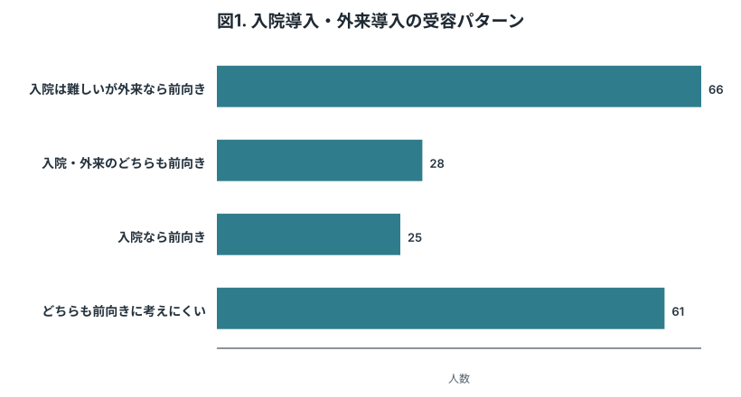
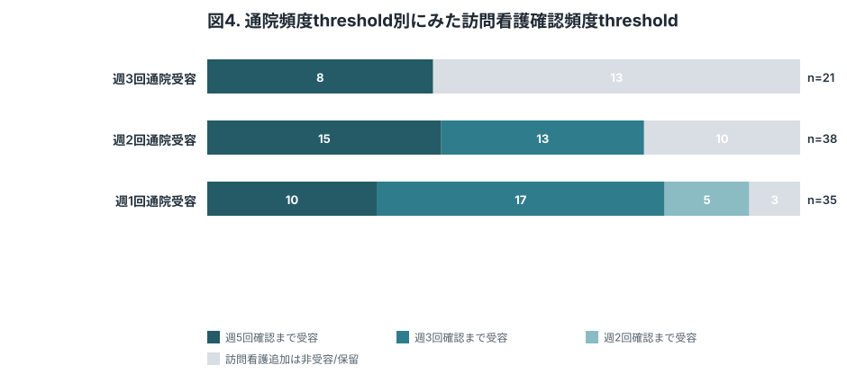
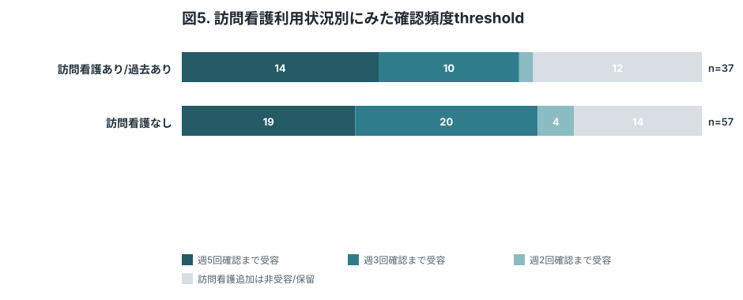
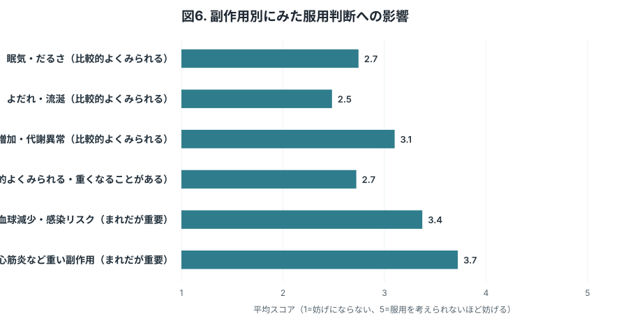
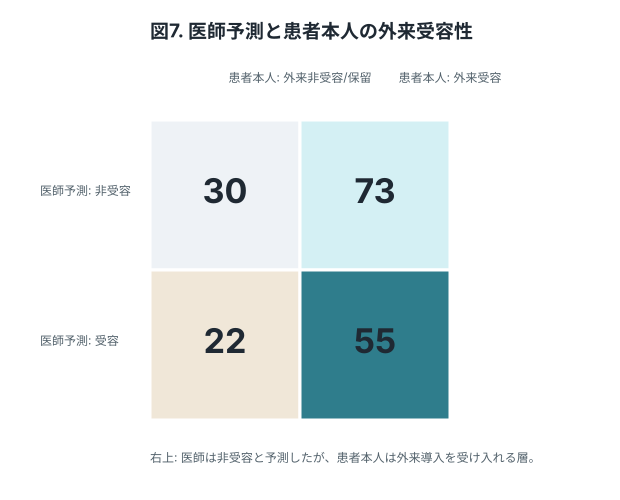
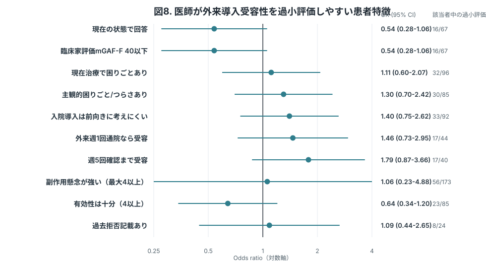

この版の考え方
科学的価値、方法論的妥当性、回答しやすさのバランスを取った現時点の推奨版。
- 臨床家調査のmGAF-Fに基づき、mGAF-F 40以下は現在の状態で回答、41以上は将来TRS相当となった場合の仮想シナリオで回答する2層構造にした。
- 参加者コードで回答前提と有効性/副作用の提示順を内部設定し、提示順によるプライミングを探索できるようにした。
- クロザピン服用意向の前に、有効性の十分性評価と副作用別の服用判断への影響を取得する。
- 主要アウトカムを“入院導入と外来導入の受容性”と“外来導入時の初期通院頻度threshold”に固定。
- 抽象的な外来導入Yes/Noは削除し、外来導入受容性は週3/週2/週1通院条件のいずれかを受容したかで定義する。
- 通院のみthresholdを先に決め、その通院頻度を固定したうえで、診察と訪問看護を合わせた確認頻度のthresholdを高頻度から順に尋ねる。
- 訪問看護は安全面不安への救済分岐ではなく、医師が安全上必要と判断しうる確認頻度を患者が受容できるかを測る別thresholdとして扱う。
- 医師判断との接続図表を加え、臨床家調査と患者調査を別論文でも接続できる構成にした。
Table 1. 回答者背景
| 項目 | 値 |
|---|---|
| 解析対象者 | 180 |
| TRS適格候補 | 86 (47.8%) |
| 広い未使用外来患者 | 94 (52.2%) |
| 臨床家評価mGAF-F 40以下 | 67 (37.2%) |
| 現在の状態で回答 | 67 (37.2%) |
| 将来TRS相当を想定して回答 | 113 (62.8%) |
| 現在の治療で残る困りごとあり | 96 (53.3%) |
| 主観的困りごと/つらさあり | 85 (47.2%) |
患者本人の受容性を解釈するため、対象集団、現在の困りごと、主観的つらさを最小限の背景情報として置く。

回答前提別に、入院導入と外来導入の受容性を比較する中核図。外来導入受容性は抽象的なYes/Noではなく、週3/週2/週1通院条件のいずれかを受容した場合として定義する。mGAF-F 40以下の実意思決定に近い群と、将来TRS相当となった場合を想定する群を分けることで、企画倒れを避けつつ解釈可能性を保つ。Gee 2017やJakobsen 2025で入院導入が大きな障壁として示されたことを踏まえ、“入院は難しいが外来なら前向き”という潜在ニーズを可視化する。

入院導入を前向きに考える人と考えにくい人に分け、外来導入の通院頻度thresholdを示す中核図。入院導入を受け入れうる人でも外来週3回は難しい、あるいは入院導入は難しい人でも外来なら受容に転じる、といった現実的な選好のずれを示す。

外来導入を受容しうる人について、通院に訪問看護を加えた総確認頻度をどこまで受け入れられるかを示す図。安全に必要な頻度は医師が判断する前提で、その頻度を患者が受容可能かを直接把握する。

先に確定した通院頻度thresholdごとに、訪問看護を加えた確認頻度thresholdを示す図。週3回通院を受容する人、週2回なら受容する人、週1回なら受容する人で、追加モニタリングへの許容度が異なるかを確認する。

現在の状態で回答した群と、将来TRS相当を想定して回答した群で、訪問看護を含む確認頻度thresholdがどう異なるかを示す図。即時候補者と潜在ニーズ層の違いを分けて解釈するために置く。

副作用は単一項目にまとめると解釈しにくいため、眠気、流涎、体重増加、便秘、採血異常・感染リスク、心筋炎などに分けて、服用判断をどの程度妨げるかを測定する。

患者調査を臨床家調査と接続する図。Jakobsen 2025の示唆に沿い、医師が非受容と想定する患者の中にも外来導入なら受け入れる層がいるかを示す。

図7の右上象限、すなわち「医師は外来導入を受け入れにくいと予測したが、患者本人は外来導入を受け入れる」層に関連する因子を単変量ORで示す。因果推論ではなく、医師判断だけでは見落とされやすい患者像を探索的に記述する目的で置く。